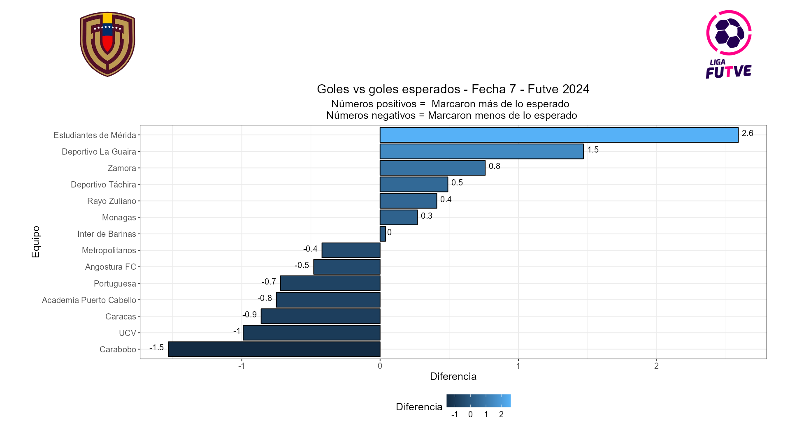
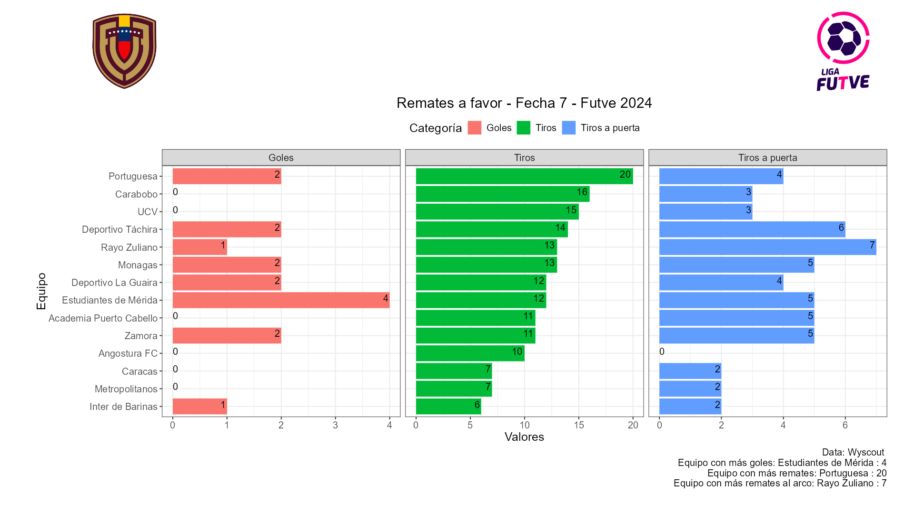
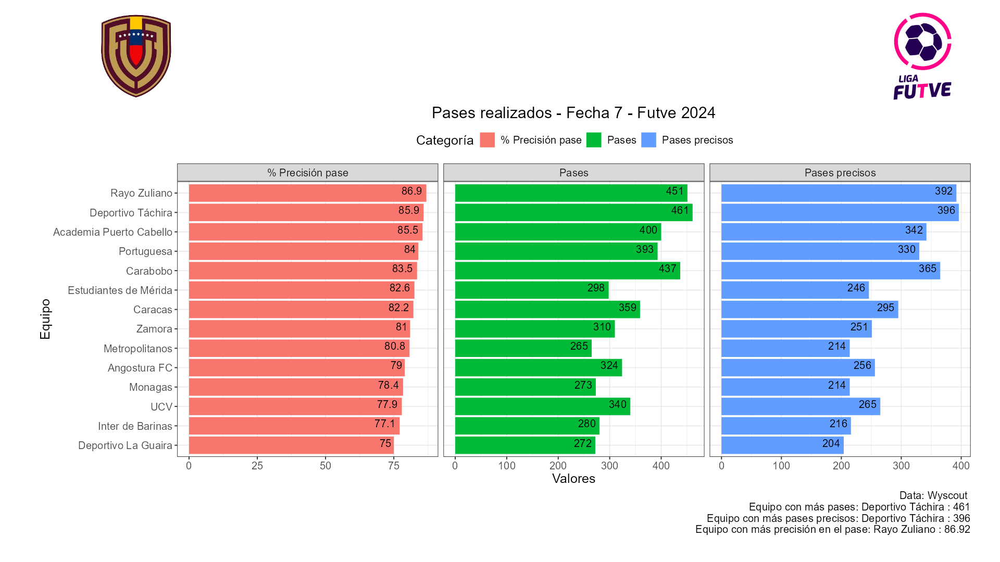
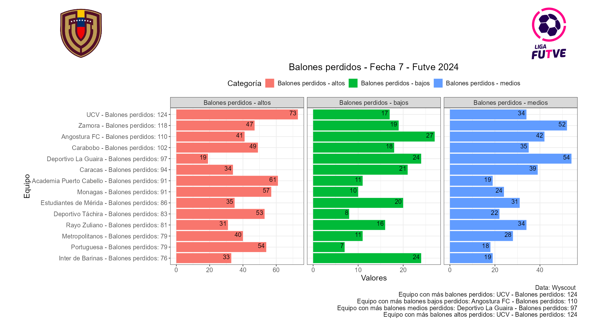
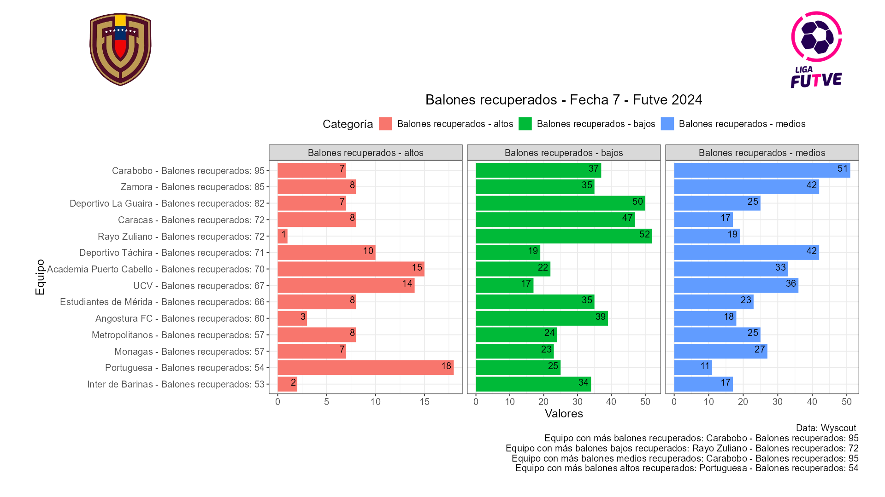
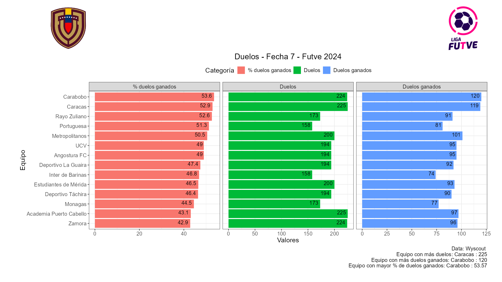

📌 Estudiantes de Mérida con su victoria 4 a 0 fue el equipo que mejor aprovecho marcando las ocasiones que tuvo, por el contrario el Carabobo FC tuvo un valor de -1.5 indicando que no fueron efectivos de cara al arco y que al menos pudieron marcar un gol según las ocasiones generadas.
📌 El Portuguesa fue el equipo que más remató al arco (20 disparos) de ellos 4 fueron a puerta y 2 terminaron en gol. Por su parte el Rayo Zuliano fue el equipo que más remató a puerta con 7 disparos, donde 1 terminó en gol. El Inter de Barinas fue el más efectivo, sólo remató 6 veces, dos de ellas fueron al arco y 1 termino en gol, sin embargo este hecho no lo ayudo en la derrota que tuvieron frente al Portuguesa.
📌 El Rayo Zuliano fué el equipo con mayor precisión en el pase (86.9%), donde realizaron 451 pases de los cuales 392 fueron exitosos, esto fue en la derrota 2 a 1 de local frente a Monagas. El Deportivo la Guaira por su parte fue en esta ocasión el equipo que menos precisión tuvo en el pase (75%) probablemente por el estado de la cancha luego de una fuerte lluvia.
📌 La UCV fue el equipo que más balones perdió (124), de los cuales 73 fueron en zona alta, 17 en zona baja y 34 en zona media. Por otra parte el Inter de Barinas fue el equipo que contabilizó menos pérdidas.
📌 El Carabobo FC fue el equipo que más recuperaciones realizó (95), de las cuales 7 fueron en zona alta, 37 en zona baja y 51 en zona media.
📌 El Carabobo FC fue el equipo con un mayor porcentaje de exito en los duelos (53.6%) donde se tuvo 224 duelos y ganaron 120. El Caracas FC y Academia Puerto Cabello contabilizaron 225 duelos en su partido, el Caracas FC logró ganar 119 (52.9%) y Academia Puerto Cabello ganó 97 (43.1%).
